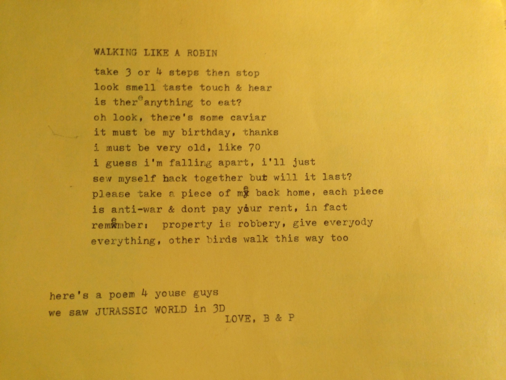
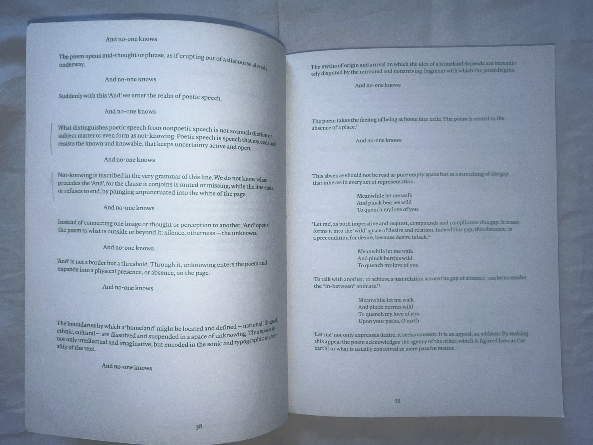
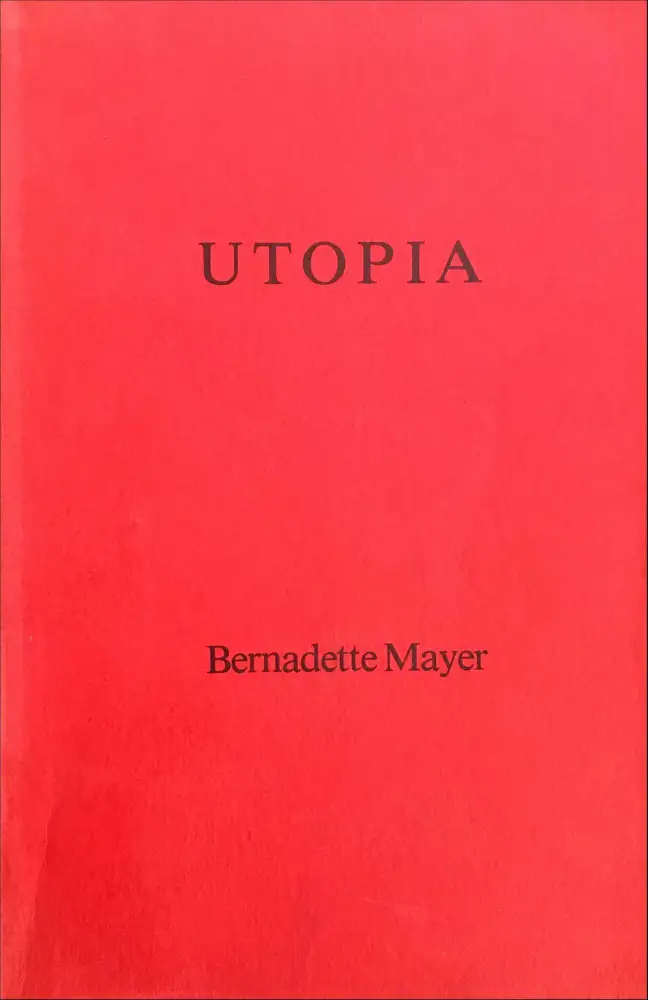
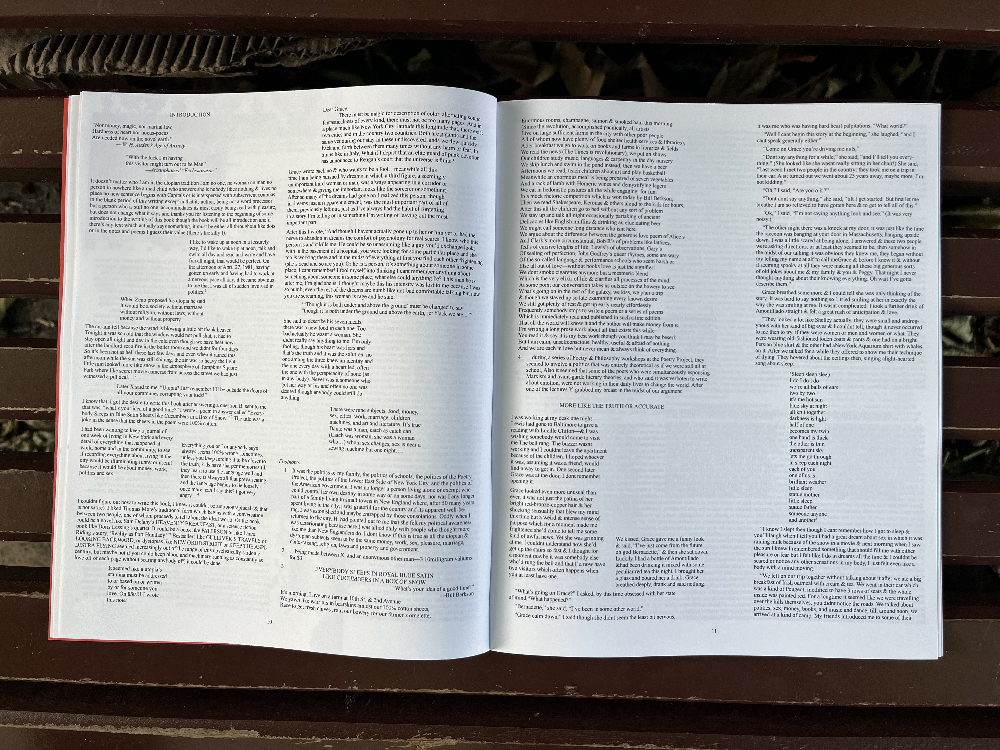
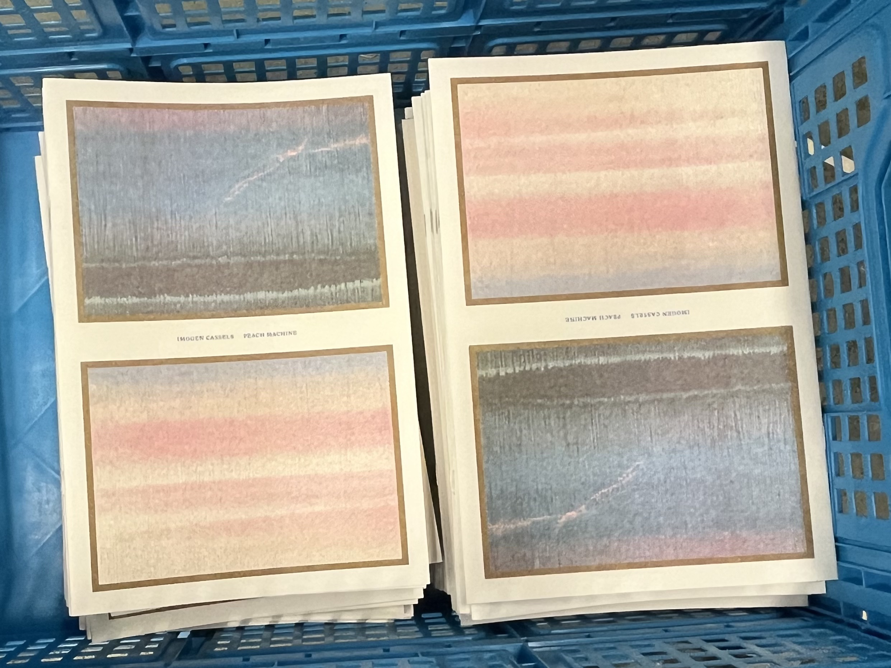

Carrying the Force of a Poem
Introduction
In this research essay, I argue that the force of non-linear writing emerges through its formal qualities, is sustained by the page, and is shaped by the ways it is published and circulated.
By non-linear writing, I mean writing that does not move in a single forward line. Rather than guiding the reader through one continuous explanation, it asks them to move between breaks, interruptions, repetitions, and different strands of thought, image, and voice. In this sense, I am close to Lyn Hejinian’s idea of a “rejection of closure,” Lyn Hejinian, “The Rejection of Closure,” in The Language of Inquiry (Berkeley: University of California Press, 2000), 40. Where the text does not deliver a fixed end in advance. What matters to me here is that such writing keeps relations active rather than resolving them too quickly.
While this kind of writing can take many spoken and written forms—essays, lectures, experimental texts, and hybrid works—I focus in this essay on poetry. Partly because I love it, and because that love is tied to the way poetry makes form felt in reading.
What gives this writing force is not only what the writing says, but how its form shapes the experience of reading. Its movement appears through specific formal decisions such as line break, syntax, repetition, interruption, shifts in tone, juxtaposition, and return. In order to understand this force, I begin with the way form organises the reader’s attention.
If the force of a poem emerges through its formal movement, the next question is how that movement remains active for the reader. When a poem is set on a page, typographic decisions can either sustain its movement or smooth it into a more linear reading.
Publishing extends this question further because it shapes how the poem reaches a reader in the first place. Through framing, format, sequencing, and circulation, publishing shapes the conditions under which a poem is approached and the kind of attention it invites. A poetry pamphlet received by mail see ava books… and a poetry collection stumbled upon in a bookstore do not stage the same encounter.
Chapter One —Following
While the force of a poem begins in its form, it is realised in the act of reading, or, as the poet and critic John Wilkinson is a contemporary English poet, and student of poetics. His recent publications include My Reef My Manifest Array (Carcanet 2019), Wood Circle (The Last Books 2021), and Fugue State (Shearsman 2023). calls it, in “following.” In the essay “The Following” John Wilkinson, “Following the Poem or, Misty Thoughts on Winnicott, Celan, and Shelley,” in The Following, The Yellow Papers 1 (Amsterdam: The Last Books, 2020), 38–39. from The Lyric Touch, Wilkinson uses this word to describe a mode of reading that is active rather than passive. “Following” suggests moving with the poem, keeping up with it, and being led by it while also participating in it. In other words, it implies motion, duration, and involvement: the reader does not simply receive the poem’s meaning, but moves with its shifts, delays, and returns as they unfold in time. This matters for poetry because a poem often makes sense through its movement as much as through what it says.
John Wilkinson writes:
Through following [emphasized in a sentence, following—go or move after, travel behind, sharing the path, an active process, in the contrast to simply reading] a poem [why a poem] (not just any poem) [what is different about a poem and any poem], a reader can become involved in the evocation [to appear] and enactment [activation] of a radical hybridity [ ], pulling together ways of thinking about the world [‘poets are unacknowledged legislators of the world’] modernity has categorically [separately, distinctly, isolating] but falsely [not true to reality] separated; but such reading [the interaction with the text] takes place in time [an event], so continuously a reader unpicks[un selects, uncategorizes] and reintegrates [puts them together] elements [what are the elements] of the poem in a felt motion [motion of pulling?] which can restore a healed and full being in the world [true to reality], involving in its fullness and as a condition of it, the detours, the lapses, and the breaks[conditions of the fullness] in his or her journey.
In other words, Wilkinson describes reading a poem not as receiving a fixed meaning, but as moving with shifting relations that unfold in time. In this chapter, I use “force” to mean the way a poem organizes the reader’s attention over time. This passage matters because it presents reading as active, temporal, and relation-making, and it opens three ways of thinking about what “following” involves.
Firstly, “following” asks for active engagement. A poem does not ask only to be understood; it asks to be stayed with, to be moved with in time. Through its composition, it organises the reader’s attention, and this is where the force of a poem appears: not as a hidden intensity inside the text, but in the way the reading is directed, delayed, and kept in motion. In this sense, force lies in the structure of the attention that a poem makes possible. Through its form, a poem invites the reader to pause, double back, hold contradiction, hear rhythm as thought, and remain inside an unclosed form. Attention here can also mean being inside something not closed, lingering in what is unresolved.
Let’s look at a short poem by Bernadette Mayer is an American avant-garde poet and writer. Her writing is often described as stream of consciousness writing, she often uses journal and dream material in her works. See Bernadette Mayer’s List of Journal Ideas , “Walking Like a Robin”.

Walking Like a Robin
take 3 or 4 steps then stop
look smell taste touch & hear
is there anything to eat?
oh look, there's some caviar
it must be my birthday, thanks
i must be very old, like 70
i guess i'm falling apart, i'll just
sew myself back together but will it last?
please take a piece of me back home, each piece
is anti-war & don't pay your rent, in fact
remember, property is robery, give everybody
everything, other birds walk this way too
It begins as a set of sensory instructions—“take 3 or 4 steps then stop / look smell taste touch & hear”—but quickly moves into appetite, joke, age, bodily fragmentation, and political speech. It moves fast and abruptly, but not arbitrarily. The poem does not explain how one moment leads into the next; instead, it asks the reader to keep moving with the shifts and to hold them in relation. Its force lies precisely there: not in delivering one stable meaning at once, but in keeping attention active across those changes.
Second, this force unfolds in time. A poem may be read in one pass, but its relations are not always fully available at once. When reading, a line break can delay sense, the next line can drastically change the meaning of the first, a pause can leave the reader briefly suspended, repetition and rhythm can make meaning build gradually rather than all at once. Meaning is made over time, as earlier lines are altered by later ones and the reader keeps recomposing the poem through return.
Phil Baber’s reading of Friedrich Hölderlin’s “Homeland,” published in Bricks from the Kiln no. 4,

can serve here as an illustration. In the spread reproduced here, Baber returns repeatedly to the line “And no-one knows,” reading it slowly and allowing new meanings to gather around it as the commentary moves forward. Rather than exhausting the line in one explanation, he stays with its uncertainty, its grammar, and its relation to the white space and the lines that follow. What this makes clear is that reading does not only move forward; it also returns, accumulates, and recomposes meaning over time.Third, because the reader is asked to move through the poem actively and over time, the force of a poem is not only that it holds attention, but that it changes how relations are felt within it. As the reader moves through the poem, thought and feeling, image and idea, memory and present tense are no longer encountered as separate orders. They begin to act on one another. In this way, the poem does not simply present relations; it makes the reader experience them differently. Part of its force lies here: in shifting how connection is felt while reading.
Chapter two —Form on the Page
If the force of a poem lies in the reader’s active and temporal “following” of it, the next question is how that following remains possible when the poem is encountered on by the page I mean the material field in which a poem is encountered in print. . The pauses, returns, interruptions, and recompositions that shape the reading in time still need to be felt in print. Typography , by it I mean the formal decisions that shape how language appears there: spacing, scale, placement, lineation, and sequence. becomes important here because it gives those movements a material form, shaping how the poem’s force is held and made readable on the page.
By “paratext,” I mean the surrounding elements that frame the poem, such as running heads, titles, page numbers, and its relation to other texts in the publication. Together, these elements do not simply display the poem; they shape how its movement is met in reading. Here, force names the way a poem’s movement is materially held and made legible on the page.
Some of these decisions shape pace. Leading and white space can lengthen or shorten pauses, while line length and spacing affect how quickly or slowly a reader moves through a passage. Others shape relation. Placement, adjacency, and sequencing can connect fragments, separate them, or make them speak across the page. Others shape tone and emphasis. Scale, textual treatment, and visual hierarchy can suggest shifts in volume, intensity, or register. In this way, the page not only holds the poem, but helps organize how its movement becomes readable.
This became concrete to me during Typography class, led by Rietlanden Women’s Office —collaborative practice of Elisabeth Rafstedt and Johanna Ehde, which is interested in current and historical issues connected to (reproductive) work and collaborative graphic design. The basis of their work is a printed publication series called MsHeresies — an inquiry into collaborative graphic design practices and the ornamental as a form of work critique. , where we were asked to republish Utopia

, a book of poems, imaginary dialogues, and various textual ephemera of Bernadette Mayer Other works of hers are Midwinter Day, Works and Days, Sonnets, Milkweed Smithereens, The Desires of Mothers to Please Others in Letters, The Golden Book of Words, etc. . I organized a reading group around the text partly because it felt, in itself, like a utopian thing to do, and partly because I wanted to share a text I was excited by. At the same time it became a way of understanding not only what the text said, but how it moved when read aloud.What stuck with me in the first session was how dynamic the reading of the text became once it moved between different readers, reading aloud. Sentences often seemed about to end and then kept going, so that the voice of the current reader had to continue beyond its expected stopping point. Different passages carried different tonalities, some fragments were even written by friends of Bernadette. There were pauses, interruptions, shifts in pace, and questions that remained hanging in the room. The text did not unfold as one stable stream, but as a field of changing speeds, voices, and returns.
When I began typesetting Utopia, I worked intuitively, from the memory of that collective reading. I wanted the page to register text’s changes in pace, different densities, and voices.
I used columns of different widths to show the changing density of the text and to interrupt a single way through it. Arranged across the page, they allowed one fragment to lead into another without forcing them into a fully linear order, which felt closer to a text made of multiple voices and overlapping parts. Footnotes were treated with the same importance as the main body of text, so they became part of the composition rather than being left at the margins. This kept them active in the reading, emphasising the author's use of them to invite people into the text, instead of making them feel secondary. At other moments, I tried to preserve the shape of a poem where its visual form seemed bound up with its pacing and emphasis. In this way, the publication became not simply a display of Utopia’s formal qualities, but an attempt to carry them into reading on the page.

Since then, the relation between non-linear writing and the conditions of its encounter has remained central to my practice. Whether a poem is read aloud or encountered silently on the page, its force depends on how its movement is carried toward the reader and held in the act of reading. This is why typography matters to me not simply as representation, but as interpretation: it shapes pace, pause, return, and relation. Once the page is understood in this way, the question extends beyond typography alone. Publishing becomes the next problem, because it shapes how that page reaches a reader in the first place and under what conditions the poem is met.
Chapter Three —Publishing and Circulation
Before a poem is read, publishing already shapes the conditions under which it is met. Through the cover, title, format, sequencing, paratext, and context of a publication, it frames a reader’s first approach to the text. Publishing does not only shape that encounter; it often helps bring it into being. In this sense, a poem does not meet a reader in abstraction, but through a specific encounter framed by publication. In this chapter, force names the way a poem’s movement is shaped by how it is framed, approached, and circulated.
This idea first became clear to me during my internship at no kiss , a printer and binder in Amsterdam , where I helped produce Peach Machine, a poetry pamphlet by Imogen Cassels published by The Last Books. Its cover appeared to show skies

, but was in fact made from scans of the sheets used to clean the offset press. What interested me in this cover was not only that it drew the reader into the publication, but that it acted as a threshold. Without explaining the poems, it suggested a way of entering them, especially because Cassels’s writing returns often to images of the sky. It made me think more carefully about what a cover can do: not summarise a text, but shape the mood and direction of a reader’s approach to it.But a poem is not shaped only at the moment of publication. It is also changed by the routes through which it continues to move: a reading group, a small-press pamphlet, a bookstore shelf, a poster in a window, a mailed packet. In each of these situations, what is carried is not only the text itself, but a different way of meeting it. Circulation therefore shapes more than visibility; it shapes how and under what circumstances a poem is read. A poem heard aloud in public, stumbled upon in a shop, or received quietly in the mail does not meet its reader in the same way.
This is why publishing became important to my own practice. Through publishing, the encounter between poem and reader can be shaped intentionally: through the way a publication carries itself, through its framing, and through the ways it is shared. What interests me is not only how to deliver a poem to a reader, but how to create the conditions in which they can follow it, stay with it, and have time to engage with its movement. In this sense, publishing becomes one of the means by which the force of non-linear writing continues into the world.
Conclusion
In this essay, I have tried to understand why certain kinds of writing stay with me so forcefully, and what it means to work with them through publishing. What I have shown is that the force of non-linear writing emerges through form, is sustained by the page, and continues to change through the ways it is framed and circulated. This has made me think of publishing less as something that comes after writing, and more as one of the conditions through which writing is met. For my own practice, that means treating publication as a way of carrying the movement of a text into the world. What remains for me now is to ask how publishing can carry that movement without closing it down.
Bibliography
Hejinian, Lyn. “The Rejection of Closure.” In The Language of Inquiry. Berkeley: University of California Press, 2000.
Wilkinson, John. “Following the Poem or, Misty Thoughts on Winnicott, Celan, and Shelley.” In The Following. The Yellow Papers 1. Amsterdam: The Last Books, 2020.